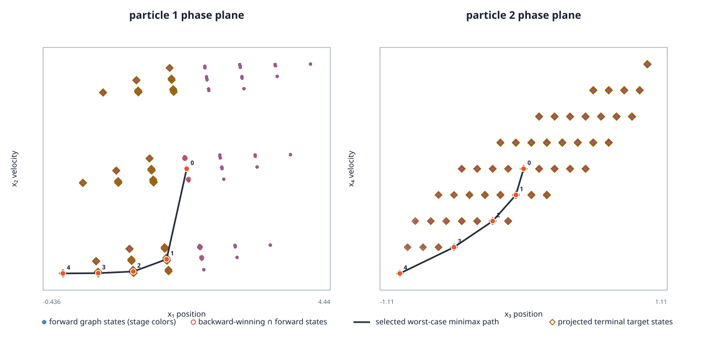

This example applies our finite-feedback reachability and causal minimax solvers to the source-derived two-particle game. The finite game has four physical state coordinates and a short four-stage horizon.

| Forward graph states by stage | 1, 9, 81, 621, 3969 |
|---|---|
| First robust capture of |x₁−x₂| ≤ 1 | 4 decisions (0.8 s) |
| Finite causal minimax terminal gap | 0.859899 |
| Selected minimizing-control / worst-response path | u=-3, v=-3 → u=-3, v=-3 → u=-3, v=-3 → u=-3, v=-3 |
| Independent replay | verified: 4681 states, 6408 transition cells, 5 winning layers |
The source environment uses state (t,x₁,v₁,x₂,v₂), parameters α=1, m₁=0.1, m₂=1, 0.2-second decisions, and 20 held-action RK4 substeps. Its terminal reward is −|x₁−x₂|; accordingly, u minimizes the terminal gap and v maximizes it. This pilot changes the source initial state from all zeros to (0,2,0,0,0), truncates the 2-second source horizon to 0.8 seconds, and uses action catalogues [-3, 0, 3].
The upstream Markov game supplies both agents' actions at a step. Our finite causal solver gives the disturbance player v the stronger within-stage information pattern: v sees u before responding. State values and policies are for this finite, quantized game; they do not reproduce or estimate the continuous-action RL outcome. The graph rounds each RK4 stage state to a 10⁻⁶ lattice and solves only states reachable from the selected initial point.
Source: TwoParticleGame at pinned commit, source blob 7e7d326f8ff81f7dacc05ac72848eeaac6a03021, licensed Apache-2.0 at that commit. Scenario SHA-256: 13049b50f59fb69e36b14276e100f7fa4e9e185578cec0483dea287e5f226696.
Build the optional report driver with CSL_BUILD_ENV717_REPORT=ON, run csl_env717_two_particle_minimax, and independently check it with python scripts/reports/env717/check_two_particle_minimax.py DRIVER. The raw result, scenario, independent check, figure data, build identity, and checksums are included with the report files.
This is an illustrative finite game result, not a performance comparison. No speedup or continuous-game guarantee is claimed.
Capture: 2026-10-29T20:51:59+00:00; source commit dfa37472f56ad047543146b1b9240fad53ad1213; executable SHA-256 0cbc94058816da63b3f77f7cf6683f829fc06ea6e938054c1a74b80a0ebda329.
Raw result · Figure data · Independent check · Capture metadata · Reproduction notes